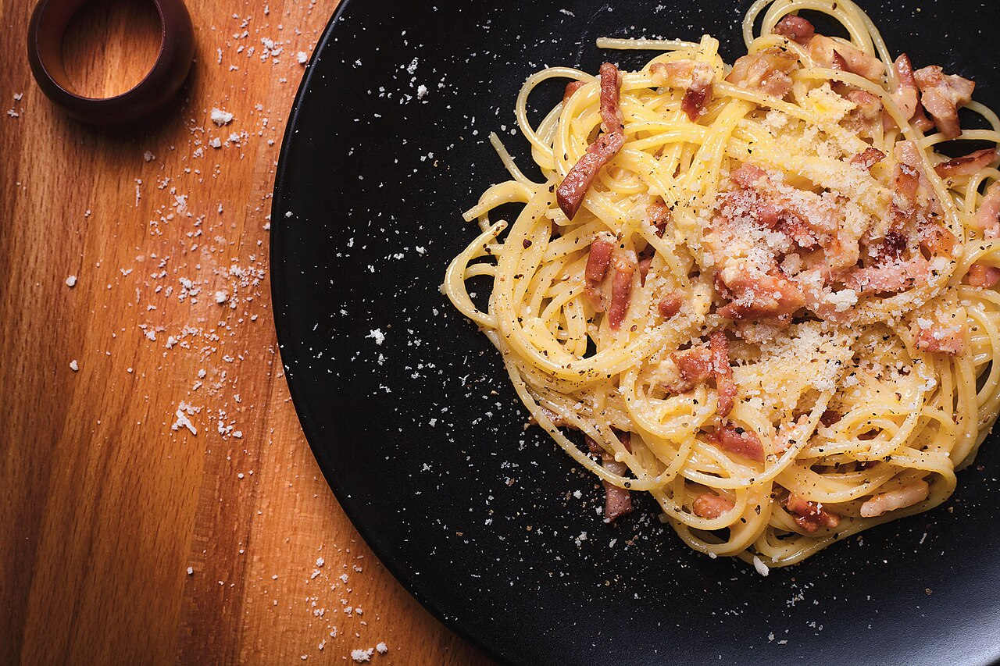

Pasta Carbonara
Helppo ja nopea arkiherkku.
Ainekset
- 200 g spagettia
- 100 g amerikan pekonia
- 2 dl ruokakermaa
- Ripaus suolaa ja pippuria
Ohje
- Keitä pasta suolatussa vedessä.
- Paista pekoni rapeaksi pannulla.
- Lisää ruokakerma pekonin sekaan.
- Lisää mustapippuria pekonin ja kerman sekaan.
- Yhdistä pasta + pekonikermaseos.
- Tarjoa heti.

Helppo Curry-kana
Helppo arkiruoka riisin kera.
Ainekset
- 400 g kanasuikaleita
- 1 sipuli, 2 valkosipulia
- 2 rkl currytahnaa
- 3 dl kookosmaitoa
- Öljyä, suolaa
Ohje
- Kuullota sipulit, lisää kana ja ruskista.
- Sekoita currytahna ja kookosmaito, anna kiehua 10 min.
- Tarjoa riisin kanssa.